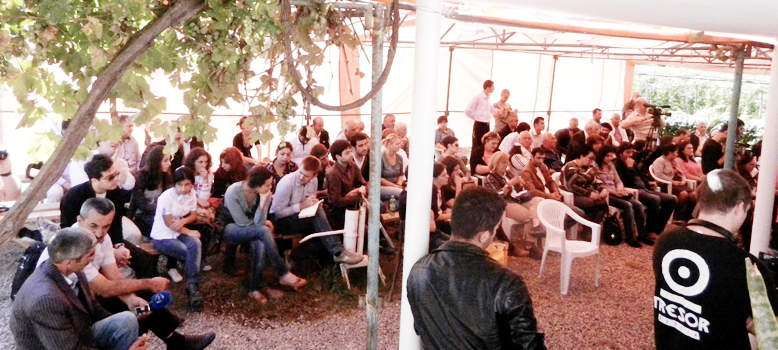
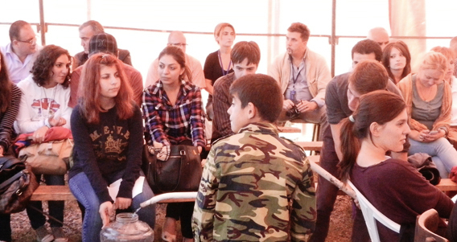
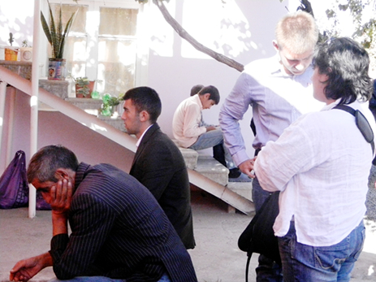
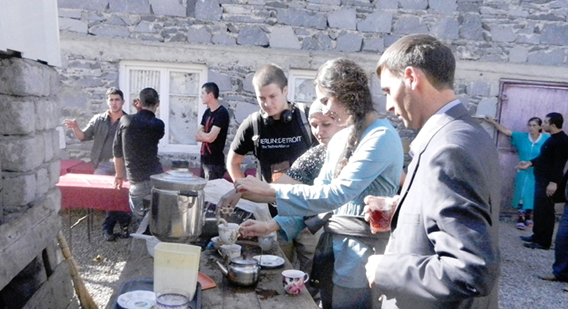

THE PLAIN TRUTH OF THINGS
Vrezh Zatikyan's speech on public hearing
that took place in the village of Tekali with the participation of the dwellers of Akstafa, Baku, Ganja, Gyumri, Ijevan, Marneuli, Noemberyan, Qazakh, Tbilisi,
Yerevan and the frontier villages of Armenia, Azerbaijan and Georgia.
Nothing is more precious than PEACE.
Nothing brings morе happiness.
Peace is the most basic starting point
for the advancement of humankind.
I live only a couple of minutes from where this is carved in stone and have read it a few dozen times and each and every time I read this it inspires me more and more to do all that is humanly possible to promote peace everywhere. Living in the United States for 24 years has given me a very broad perspective on this matter, not least because the pursuit of the American empire by criminal elements in its’ government have really made the matter black and white.
Peace, just like liberty and freedom, is popular and governments do all they can to make sure that both peace and liberty are barely intact to justify their existence and imprint in us the idea that not only we need them but we must give up some of our liberties and freedoms to supposedly gain some security.
One of the founders of the United States, Benjamin Franklin, explained the relationship between liberty and security perfectly in 1759. He said “Those who would give up essential liberty to purchase a little temporary safety deserve neither liberty nor safety.”
Nothing is more precious than PEACE.
Nothing brings morе happiness.
Peace is the most basic starting point
for the advancement of humankind.
Daisaku Ikeda
I live only a couple of minutes from where this is carved in stone and have read it a few dozen times and each and every time I read this it inspires me more and more to do all that is humanly possible to promote peace everywhere. Living in the United States for 24 years has given me a very broad perspective on this matter, not least because the pursuit of the American empire by criminal elements in its’ government have really made the matter black and white.
Peace, just like liberty and freedom, is popular and governments do all they can to make sure that both peace and liberty are barely intact to justify their existence and imprint in us the idea that not only we need them but we must give up some of our liberties and freedoms to supposedly gain some security.
One of the founders of the United States, Benjamin Franklin, explained the relationship between liberty and security perfectly in 1759. He said “Those who would give up essential liberty to purchase a little temporary safety deserve neither liberty nor safety.”

Yet this is exactly what governments demand from the people, to give up some of their liberties to gain some security. When they feel that they’re losing their full control of the people and see the society living more and more freely and people in general getting “too prosperous” in their estimation they use the oldest trick in the book called PROBLEM-REACTION-SOLUTION.
They create a PROBLEM and blame it on who they want to persecute (also known as False Flag, such as 9/11 in 2001 in the United States, or the Sumgait massacre in the former Soviet Union in February of 1988), then people REACT (in the case of 9/11 people demand for the government to go kill the terrorists and in Sumgait’s case Armenians demand Soviet Union to go kill the Azeris) and of course the government provides the SOLUTION (in the US taking basic liberties away from the people and drastically expanding the American empire. In the Sumgait case a diversion from the Independence movement and into a war between Armenia and Azerbaijan).
We have all fallen for this nasty PROBLEM-REACTION-SOLUTION trick, especially Armenians and Azeris where our perspective governments are keeping us pressed under their proverbial thumbs.
Harry Brown describes this government-people relationship very accurately when he says: “Government is good at one thing: It knows how to break your legs, hand you a crutch, and say ‘See, if it weren’t for the government, you wouldn’t be able to walk!’”
We need to break away from this kind of thinking in order to pursue our dream of living in peace. I, for one, dream that one day our 3 nations (Armenia, Azerbaijan, and Georgia) will have open borders and when traveling between these countries unless you pay attention to signs you will totally miss when you left one country and got into the other. This is not a far-fetched dream, it can really happen if we all get together around the idea of LIBERTY.
My hero, Dr. Ron Paul (who was the peace candidate in the presidential elections of 2008 and 2012) ended his awesome farewell speech to congress on November 14th of 2012 (which in my estimation is one of the greatest speeches of all time!) this way and I say we should heed his advice: “I have come to one firm conviction after these many years of trying to figure out “the plain truth of things.” The best chance for achieving peace and prosperity, for the maximum number of people world-wide, is to pursue the cause of LIBERTY.
If you find this to be a worthwhile message, spread it throughout the land.”
…And I believe that is exactly what we are doing here, in Tekali, and I will continue to do so until my last breath……
They create a PROBLEM and blame it on who they want to persecute (also known as False Flag, such as 9/11 in 2001 in the United States, or the Sumgait massacre in the former Soviet Union in February of 1988), then people REACT (in the case of 9/11 people demand for the government to go kill the terrorists and in Sumgait’s case Armenians demand Soviet Union to go kill the Azeris) and of course the government provides the SOLUTION (in the US taking basic liberties away from the people and drastically expanding the American empire. In the Sumgait case a diversion from the Independence movement and into a war between Armenia and Azerbaijan).
We have all fallen for this nasty PROBLEM-REACTION-SOLUTION trick, especially Armenians and Azeris where our perspective governments are keeping us pressed under their proverbial thumbs.
Harry Brown describes this government-people relationship very accurately when he says: “Government is good at one thing: It knows how to break your legs, hand you a crutch, and say ‘See, if it weren’t for the government, you wouldn’t be able to walk!’”
We need to break away from this kind of thinking in order to pursue our dream of living in peace. I, for one, dream that one day our 3 nations (Armenia, Azerbaijan, and Georgia) will have open borders and when traveling between these countries unless you pay attention to signs you will totally miss when you left one country and got into the other. This is not a far-fetched dream, it can really happen if we all get together around the idea of LIBERTY.
My hero, Dr. Ron Paul (who was the peace candidate in the presidential elections of 2008 and 2012) ended his awesome farewell speech to congress on November 14th of 2012 (which in my estimation is one of the greatest speeches of all time!) this way and I say we should heed his advice: “I have come to one firm conviction after these many years of trying to figure out “the plain truth of things.” The best chance for achieving peace and prosperity, for the maximum number of people world-wide, is to pursue the cause of LIBERTY.
If you find this to be a worthwhile message, spread it throughout the land.”
…And I believe that is exactly what we are doing here, in Tekali, and I will continue to do so until my last breath……

We all really have to rethink what governments ought to be and what the proper role of the government really is. Many greats from our past have warned us of too much government and government in general. Frank Hurbert, Dune once said that “All governments suffer a recurring problem: Power attracts pathological personalities. It is not that power corrupts but that it is magnetic to the corruptible.”
There is a way to avoid this and that is to truly have a government that represents the people. Throughout the world we do not have a single country that is truly democratic and that everyone who participates in the elections is represented in the government. The solution to this unrepresentativeness in government is given to us by Paruyr Hayrikyan in his latest work titled “Towards Absolute Demoracy.”
Hayrikyan concludes his work with what I find to be a core issue of what we are talking about here. He says: “The development of civilization has been accompanied by not only races and tribes, religions and nations, classes and cultures in general; but especially by the clash of very differing perceptions. At the same time and within these perceptions as most important quality has always been the struggle between two types of people. One type are those who consider themselves privileged and for that vain imagination of themselves they are ready to do all kinds of evil. The other type are those who see all human beings as equal before God and are willing to fight and give their all for this equality.”
There is a way to avoid this and that is to truly have a government that represents the people. Throughout the world we do not have a single country that is truly democratic and that everyone who participates in the elections is represented in the government. The solution to this unrepresentativeness in government is given to us by Paruyr Hayrikyan in his latest work titled “Towards Absolute Demoracy.”
Hayrikyan concludes his work with what I find to be a core issue of what we are talking about here. He says: “The development of civilization has been accompanied by not only races and tribes, religions and nations, classes and cultures in general; but especially by the clash of very differing perceptions. At the same time and within these perceptions as most important quality has always been the struggle between two types of people. One type are those who consider themselves privileged and for that vain imagination of themselves they are ready to do all kinds of evil. The other type are those who see all human beings as equal before God and are willing to fight and give their all for this equality.”

I’ll go even further and say that people individually have this clash within themselves, which reminds me of an old Cherokee parable:
”An old Cherokee chief was teaching his grandson about life and said to his grandson, who came to him with anger at a friend who had done him an injustice:
‘Let me tell you a story. I too, at times, have felt a great hate for those that have taken so much, with no sorrow for what they do. But hate wears you down, and does not hurt your enemy. It is like taking poison and wishing your enemy would die. I have struggled with these feelings many times.’
‘A fight is going on inside me,’ he said to the boy. ‘It is a terrible fight and it is between two wolves. One is evil – he is envy, regret, greed, arrogance, self-pity, resentment, inferiority, lies, false pride, self-doubt, and ego. The other is good – he is PEACE, love, hope, serenity, humility, benevolence, empathy, generosity, truth, compassion, and faith. This same fight is going on inside you and inside every other person, too.’
The grandson thought about it for a minute and then asked his grandfather, ‘Which wolf will win?’
The old chief simply replied, ‘The one you feed.’”
Let’s PEACE.
Vrezh Zatikyan
27-09-2013
Tekali village, Georgia
The hearing passed in framework of Mock Court for Human Rights project by support of National Endowment for Democracy (USA)
”An old Cherokee chief was teaching his grandson about life and said to his grandson, who came to him with anger at a friend who had done him an injustice:
‘Let me tell you a story. I too, at times, have felt a great hate for those that have taken so much, with no sorrow for what they do. But hate wears you down, and does not hurt your enemy. It is like taking poison and wishing your enemy would die. I have struggled with these feelings many times.’
‘A fight is going on inside me,’ he said to the boy. ‘It is a terrible fight and it is between two wolves. One is evil – he is envy, regret, greed, arrogance, self-pity, resentment, inferiority, lies, false pride, self-doubt, and ego. The other is good – he is PEACE, love, hope, serenity, humility, benevolence, empathy, generosity, truth, compassion, and faith. This same fight is going on inside you and inside every other person, too.’
The grandson thought about it for a minute and then asked his grandfather, ‘Which wolf will win?’
The old chief simply replied, ‘The one you feed.’”
Let’s PEACE.
Vrezh Zatikyan
27-09-2013
Tekali village, Georgia
The hearing passed in framework of Mock Court for Human Rights project by support of National Endowment for Democracy (USA)
